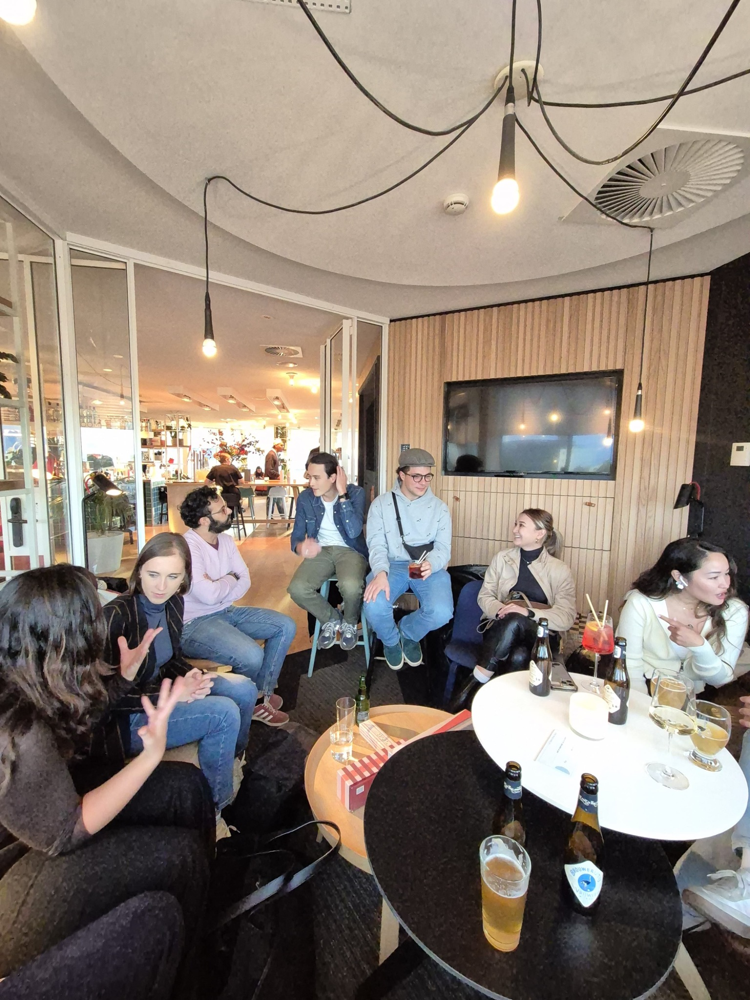
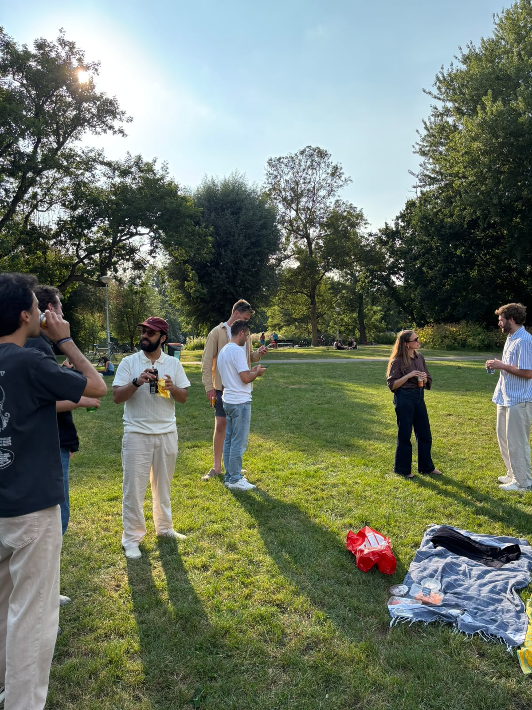
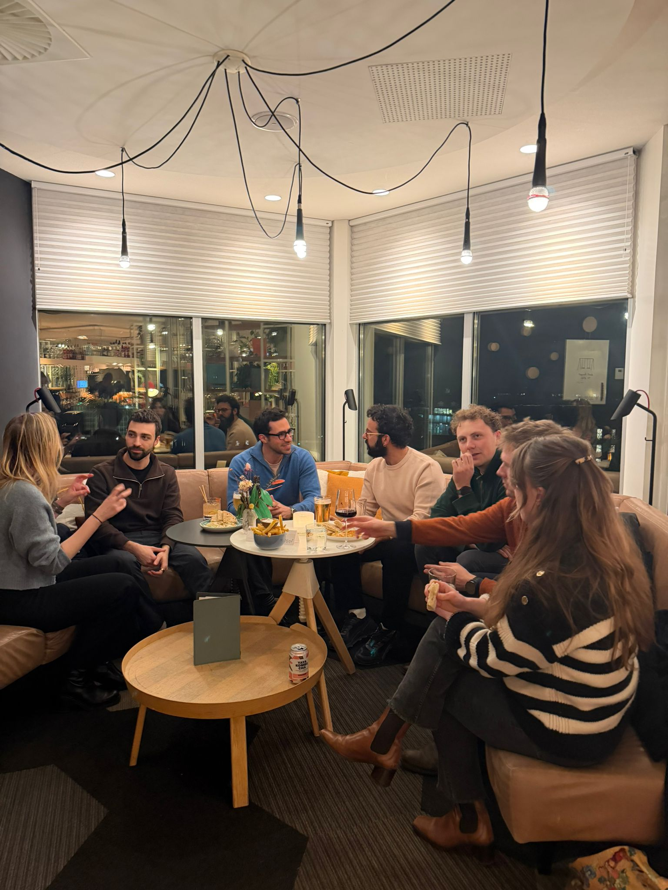
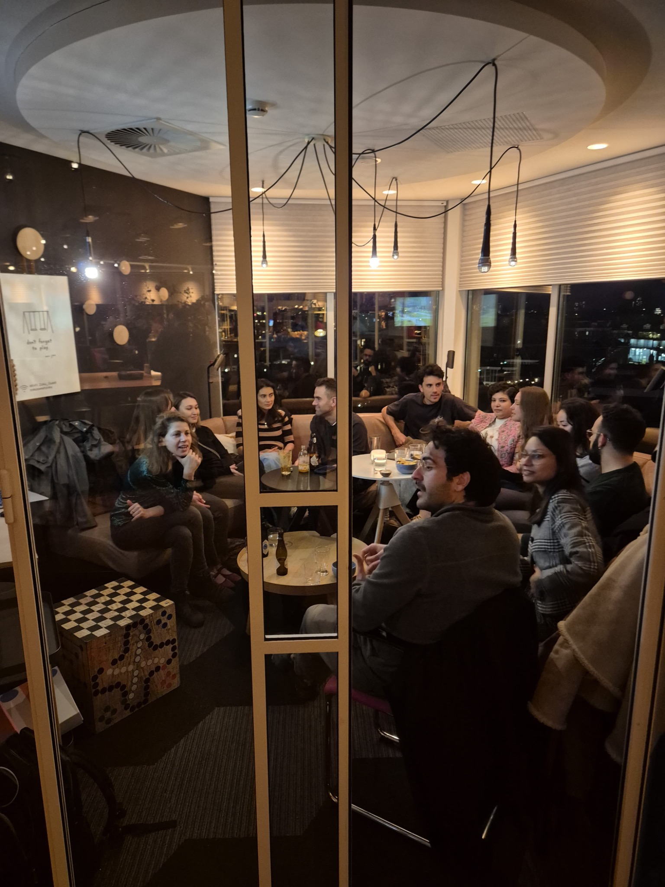
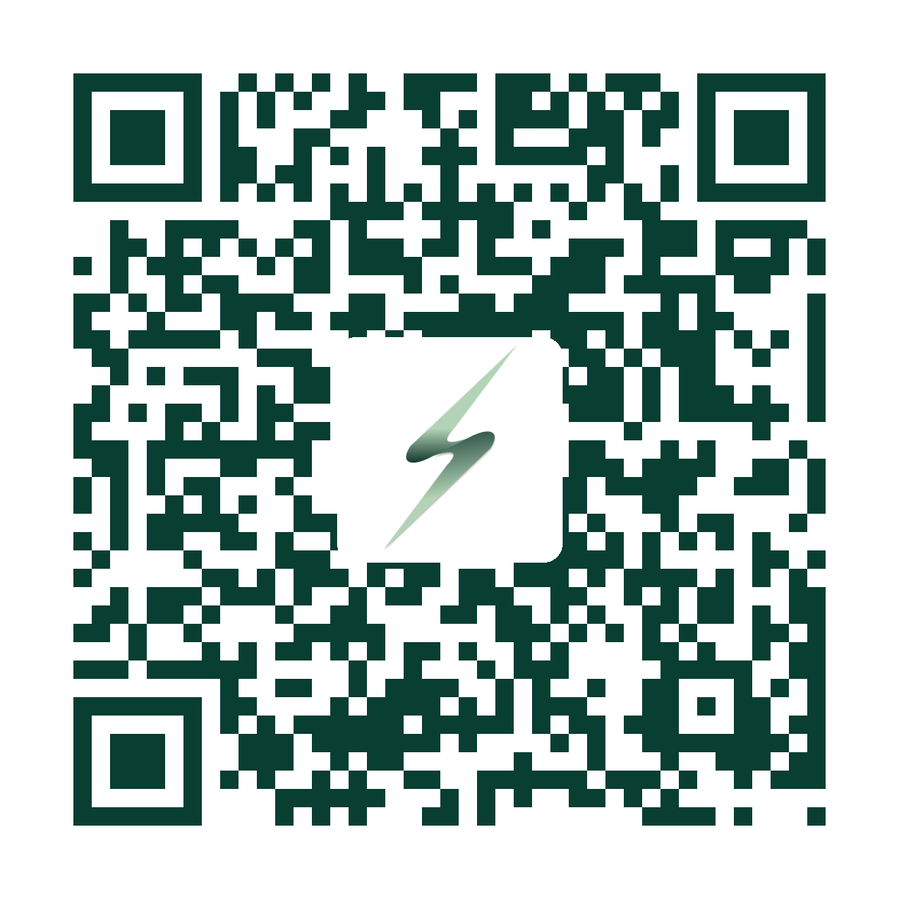

Connecting the next generation of energy professionals.
A community of young professionals working across the energy, sustainability and mobility sectors. We meet in person every month to share perspectives, learn from each other and build meaningful connections.
Good conversations. Stronger connections.
Energy Young Professionals (Energy YPs) started in Summer 2023 in Hamburg, Germany. Our community has grown to more than 200 people since then. It expanded to Amsterdam in November 2024 and has since then grown organically to around 70 members. The Energy YPs bring together people from across the energy transition — from renewables and grids to finance, consulting, clean tech and mobility. Our goal is to build a welcoming, engaged network where people get to know each other and connect in a meaningful way.
Connect
Meet peers from different parts of the energy sector through relaxed, recurring gatherings.
Learn
Exchange ideas and hear practical perspectives from experienced industry speakers.
Grow together
Build long-term professional relationships within an active Amsterdam community.
See you at the next gathering.
We organize informal networking evenings, guest-speaker sessions and occasional social activities. We always meet on the last Thursday of the month.
Energy YPs networking & guest speaker
From 18:30 · Amsterdam · Venue to be confirmed
A short guest-speaker presentation around 19:00, followed by Q&A and informal networking. Register via Luma using the button below.
Event information is based on the current plan and should be confirmed before publishing.
More than business cards.
From rooftop drinks at Zoku to picnics, canal boat outings and conversations with guest speakers, our gatherings are designed to be informal and genuinely enjoyable.



Find your people in energy.
We welcome people who want to contribute to a friendly, engaged community — not just collect contacts.

Bring a new perspective to the conversation.
We welcome experienced energy professionals, researchers and organizations interested in sharing ideas with the next generation. If you'd like to give a short talk, host a gathering or explore a collaboration, get in touch.
Interested in speaking or collaborating?
Topics can range from energy markets and infrastructure to innovation, climate tech, financing and the practical challenges of the energy transition.
Get in touchLet's connect.
Follow us on LinkedIn for community news, or join our WhatsApp group to connect with members and hear about upcoming events.
You can also scan the QR code to join on your phone.
